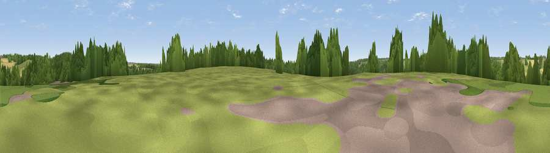

Frieth Hill
#35628 in England · top 49% of its area beats it · near FriethThe view, rendered

A 360° render of this exact spot computed from the terrain model, tree cover and land cover — summer colours, afternoon light, calibrated against photographs of famous viewpoints. Real trees, hedges and buildings will differ in detail.
The panorama
Grey silhouette: terrain skyline in each direction (720 bearings, Earth curvature and refraction included). Dashed green: skyline with trees (+15 m) and buildings (+8 m) as obstacles. Blue strip: how far the ground is visible on each bearing.
Where the view opens
Wedge length = distance to the farthest visible ground on that bearing (vegetation-aware). Rings at 10, 25 and 50 km.
What fills the view
41% grassland · 39% woodland · 19% cropland · 1% built-up
Angular shares of the visible panorama (visual magnitude), not map area. Landscape diversity 0.48 (0–1 Shannon).
Key numbers
More beautiful places nearby
The staircase of upgrades: each row has a higher view potential than everything closer. Driving times are estimates from straight-line distance, calibrated against real road routing — check an actual route before setting out.
| Place | Direction | Drive | Score |
|---|---|---|---|
| Viewpoint near Frieth | WNW · 0 km | ~1 min | 39.1 |
| Viewpoint near Cadmore End | NNW · 2 km | ~5 min | 42.7 |
| Viewpoint near Lane End | ENE · 3 km | ~7 min | 48.9 |
| Viewpoint near Turville | WSW · 3 km | ~7 min | 50.4 |
| Viewpoint near Fawley | WSW · 6 km | ~12 min | 56.1 |
| Viewpoint near Kingston Blount | NNW · 9 km | ~17 min | 67.4 |
| Viewpoint near Lewknor | WNW · 9 km | ~18 min | 70.8 |
| Viewpoint near Lewknor | NW · 9 km | ~18 min | 74.4 |
51.60887, -0.85766 · source: dobih hill · position refined by local search. Computed location — check access rights before visiting.